MVUE / BLUE (Minimum Variance Unbiased Estimator / Best Linear Unbiassed Estimator)
Loading...
Searching...
No Matches
MVUE Library
Minimum Variance Unbiased Estimator library for sensor fusion.
Introduction
The MVUE library provides lightweight, template-based C++ implementations of Minimum Variance Unbiased Estimators (MVUE) for combining multiple independent measurements of the same quantity.
When multiple sensors provide measurements of the same physical quantity with known measurement variances, the measurements can be combined into a single estimate with lower variance than the individual measurements.
The library provides estimators for a fixed number of measurements as well as a generic estimator supporting an arbitrary number of measurements.
Mathematical Model
Consider a quantity
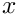
measured by
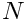
independent sensors:
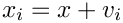
where
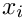
is the measurement from sensor
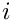
and
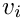
is zero-mean measurement noise with variance
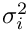
.
The minimum variance unbiased estimate is obtained using inverse-variance weighting:
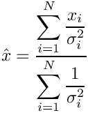
The variance of the resulting estimate is:
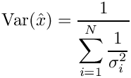
Therefore, measurements with lower variance receive greater weight in the resulting estimate.
The inverse-variance weighted estimator is also the Best Linear Unbiased Estimator (BLUE) when the required assumptions are satisfied.
In particular, for independent measurements with known variances, the estimator can be written as a linear combination:
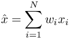
where
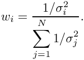
The weights satisfy the unbiasedness condition:
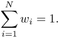
Features of Library
The library provides:
Two-measurement MVUE estimator.
Three-measurement MVUE estimator.
Four-measurement MVUE estimator.
N-measurement MVUE estimator.
C++ template support for different numeric types.
A lightweight interface suitable for embedded and real-time applications.
Assumptions
The estimator assumes that:
The measurements estimate the same underlying quantity.
The measurement errors are unbiased.
The measurement variances are known.
The measurement variances are positive.
Measurements are independent when using the inverse-variance weighting formulation implemented by this library.
If measurement errors are correlated, the covariance between measurements must be considered and the simple inverse-variance formulation is no longer sufficient.
Project Structure
The library is organized as follows:
MVUE
+-- include
| +-- mvue.h
| +-- mvue_2.h
| +-- mvue_3.h
| +-- mvue_4.h
| `-- mvue_N.h
|
`-- src
+-- mvue_2.tpp
+-- mvue_3.tpp
+-- mvue_4.tpp
`-- mvue_N.tpp
Quick Start
Two-Measurement Example
The following example combines two measurements with known variances:
 1.17.0
1.17.0